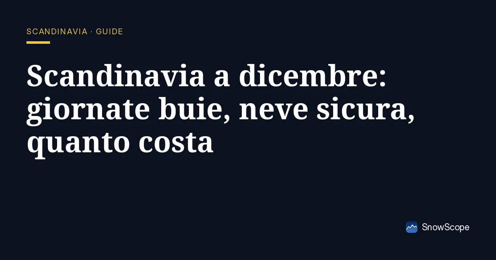

Scandinavia a dicembre: giornate buie, neve sicura, quanto costa
Dicembre in Scandinavia porta certezza fredda e luce fioca. A mezza montagna in tutta la regione, lo spessore della neve raggiunge 30 cm o più in quasi ogni inverno—dall'83 % a Levi e Ylläs al 100 % a Hemavan. Il rovescio della medaglia: giorni corti, prezzi ripidi che cambiano per data in Norvegia e Svezia, e una divisione sud-nord nell'affidabilità.
Le previsioni neve in tempo reale per Scandinavia in December nell'app SnowScopeAltezza neve, allerte powder e mappa 3D, gratis.
Dove le probabilità vi favoriscono
Se sciare a mezza montagna, la Scandinavia è prevedibile. Hemavan, Hemsedal, Oppdal e Geilo raggiungono tutti 30 cm o più nel 96–100 % delle settimane di metà dicembre in 46 inverni. Hemavan è al primo posto per profondità: 82 cm sono tipici il 15 dicembre a mezza altezza. Le medie montagne svedesi e finlandesi seguono: Ylläs 38 cm (media su tutta l'area bassa), i pendii inferiori di Hemavan 82 cm, la zona media di Hemsedal 70 cm.
Le altitudini più basse e le stazioni meridionali sono più rischiose. Sälen, la stazione svedese più bassa e meridionale, raggiunge 30 cm o più solo nel 48 % delle settimane di metà dicembre. Idre Fjäll si ferma al 65 %, Åre all'89 %. Lo schema è chiaro: andate più in alto o andate verso nord per la certezza invernale.

Settimana di Natale rispetto a inizio dicembre
Inizio dicembre è una scommessa al sud. A mezza quota di Sälen, solo il 48 % degli inverni aveva 30 cm entro il 15 dicembre nella settimana del 15–21 dicembre. Aspettate. La settimana di Natale (22–28 dicembre) è molto più sicura: il 61 % degli inverni ha consegnato 30 cm a Sälen allora, e il 98 % a mezza montagna di Hemsedal e il 98 % a Geilo. Le stazioni settentrionali come Hemavan rimangono coerenti: 100 % in entrambe le settimane a mezza altezza.
In vetta in tutte le stazioni, dicembre è praticamente garantito. La cima di Hemavan (1136 m) ha avuto 30 cm o più nel 100 % delle settimane di metà dicembre e di Natale. Pianificate un viaggio di inizio dicembre verso nord o in alto; pianificate un viaggio della settimana di Natale ovunque.
La scommessa verticale: base rispetto a vetta
Le stazioni ripide forzano una scelta. Hemsedal scende 800 m da vetta a base; Hemavan 674 m; Oppdal 742 m. Alla base a metà dicembre, l'affidabilità della neve crolla. La valle di Hemsedal (640 m) raggiunge 30 cm solo nel 57 % delle settimane di metà dicembre; la sua vetta (1439 m) lo raggiunge nel 100 %. La base di Oppdal (585 m) raggiunge il 93 %, ma non è ancora certo. Le stazioni più piatte con meno dislivello—Sälen, Idre Fjäll, Levi, Ruka—evitano questa divisione ma iniziano più in basso nel complesso.
La settimana di Natale restringe il divario. Alla base di Hemsedal, il 65 % degli inverni raggiunge 30 cm o più nella settimana di Natale, in aumento dal 57 % a metà dicembre. Pianificate le piste di base per Natale; pianificate mezza montagna per ogni settimana di dicembre.
Tendenze a lungo termine: il nord rimane stabile
Negli ultimi 15 inverni (2011–12 a 2025–26), le stazioni settentrionali hanno mantenuto la loro neve. Le settimane di Natale di Hemavan hanno ancora consegnato 30 cm a mezza altezza nel 100 % degli inverni; Levi al 100 %; Hemsedal al 100 %; Ylläs al 100 %. Oppdal e Ruka hanno gestito entrambi il 93 %. Ma le stazioni meridionali più basse si sono indebolite. Le settimane di Natale di Sälen sono scese al 47 % degli inverni con 30 cm a mezza quota, in calo dalle quote più alte nel record completo di 46 inverni. Idre Fjäll si ferma al 60 %.
Questo cambio è importante per la pianificazione. Se avete flessibilità, prenotate verso nord o in alto. Se dovete sciare a sud a dicembre, scegliete la settimana di Natale e prenotate una pista ad alta quota.
Prezzi: Finlandia fissa, Norvegia e Svezia fluide
La Finlandia pubblica prezzi fissi e li mantiene. Levi addebita EUR 60 al giorno (o EUR 57 se prenotato online 14 giorni prima), Ylläs EUR 60 (EUR 55,50 fino all'11 dicembre), Ruka EUR 58 al giorno o EUR 265 per 6 giorni. Potete pianificare un budget e prenotare con certezza.
Norvegia e Svezia utilizzano prezzi dinamici impostati per data. Geilo mostra NOK 590 (circa EUR 56 al tasso di cambio del 12 novembre), ma Trysil, Hemsedal, Hafjell, Oppdal, Åre, Sälen, Idre Fjäll e Hemavan non pubblicano prezzi fissi nei loro negozi online. Prenotate presto e online; evitate la settimana delle vacanze di Natale se il costo conta.
Luce diurna: pianificate intorno al buio
La luce diurna di dicembre si riduce man mano che andate a nord. La Norvegia e la Svezia meridionali hanno ancora alcune ore di vera luce diurna; la Lapponia finlandese entra in notte polare. Levi e Ylläs si trovano nell'oscurità per parte di dicembre, quando il sole non sorge sopra l'orizzonte. È sorprendente ma freddo, e riduce drasticamente le ore di sci. Iniziate prima dell'alba se volete luce pomeridiana; indossate basi spesse e scaldamani; aspettatevi che i pendii rimangono ghiacciati.
Le stazioni a media altitudine nella Norvegia e Svezia centrale se la cavano meglio. Geilo, Oppdal e Hemsedal hanno più ore di luce diurna rispetto all'estremo nord ma comunque molto meno che in estate. Pianificate le vostre piste migliori prima di pranzo e scendete con la funivia se le condizioni si scuriscono.
Consigli per sciatori
- Per un prezzo fisso da pianificare, scegliete la Finlandia: Levi, Ylläs e Ruka pubblicano abbonamenti giornalieri e multi-giornalieri senza sorprese.
- In Norvegia e Svezia, acquistate gli abbonamenti funivia online e prenotate presto; i prezzi cambiano con la data e sono più alti nella finestra delle vacanze di Natale.
- Scegliete mezza montagna o più in alto per la certezza di dicembre; le piste di base sono più sicure nella settimana di Natale che all'inizio di dicembre.
- Nelle stazioni meridionali (Sälen, Idre Fjäll, Åre), aspettate fino alla settimana di Natale; le stazioni settentrionali (Hemavan, Ylläs, Levi) sono affidabili da inizio dicembre.
- I giorni di dicembre sono corti: iniziate alla prima luce, pranzate velocemente e consultate il bollettino valanghe nazionale prima di sciare fuori pista al buio.
Su questi numeri
Le altezze neve delle località sono la neve più alta sui pendii superiori alla data indicata; sono stime per un'area, non una misura in un punto. Le previsioni possono cambiare. Leggi sempre il bollettino valanghe ufficiale prima del fuoripista.
Cita questo articolo
Per ricerca, didattica o stampa: numeri e grafici sono liberamente riutilizzabili con licenza CC BY 4.0 citando così.
SnowScope (2026), Scandinavia a dicembre: giornate buie, neve sicura, quanto costa, https://snowscope.app/blog/it/2026/11/scandinavia-december-skiing-dark-days-sure-snow-cost.html, consultato il 2026-11-14
SnowScope (Atlas Labs). (2026, November 14). Scandinavia a dicembre: giornate buie, neve sicura, quanto costa. SnowScope snow reports. https://snowscope.app/blog/it/2026/11/scandinavia-december-skiing-dark-days-sure-snow-cost.html
BibTeX
@misc{snowscope2026scandinaviadecemberskiin,
author = {{SnowScope (Atlas Labs)}},
title = {Scandinavia a dicembre: giornate buie, neve sicura, quanto costa},
year = {2026},
month = nov,
howpublished = {\url{https://snowscope.app/blog/it/2026/11/scandinavia-december-skiing-dark-days-sure-snow-cost.html}},
note = {Published 2026-11-14 13:29 UTC; accessed 2026-11-14}
}· CC BY 4.0 · Metodi, dati e strumenti →
Segui Scandinavia in December
Gratis: un messaggio quando arriva la neve e il meteo ogni mattina.
Altri bollettini neve

Il 15 dicembre, Hemsedal mostra 32 cm alla base, 70 cm a mezza montagna e 106 cm in vetta. L'altitudine è tutto qui.

La mezza montagna di Hemavan ha 82 cm di neve il 15 dicembre medio. In ogni inverno dei 46 anni di dati, a metà dicembre c'erano almeno 30 cm. Dati dal 13 novembre 2026.